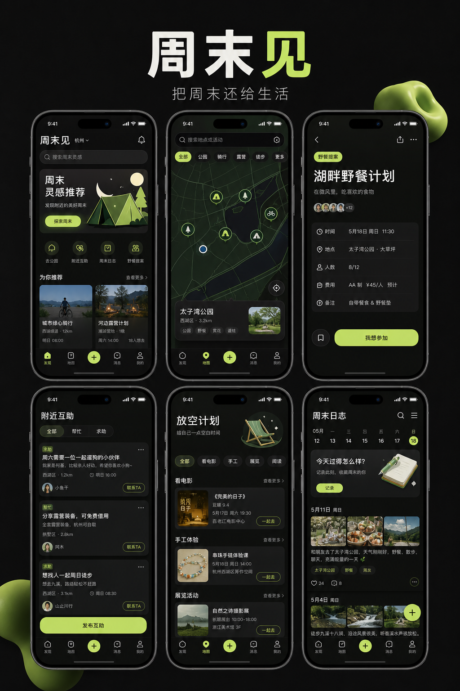
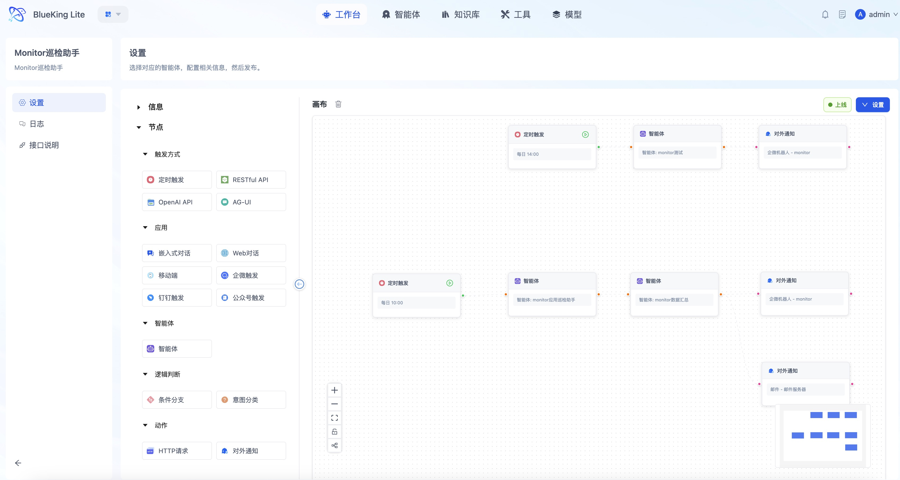
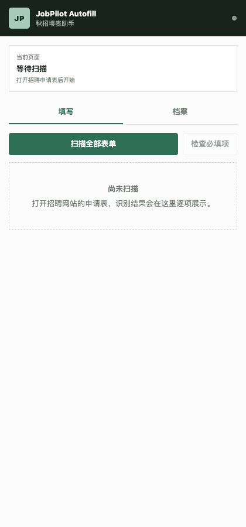
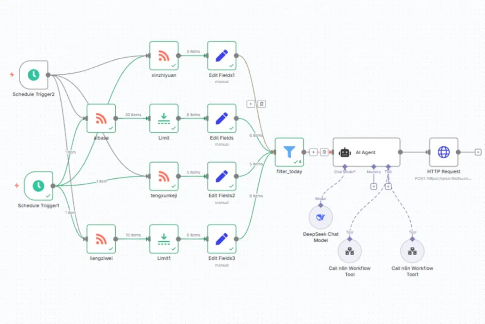
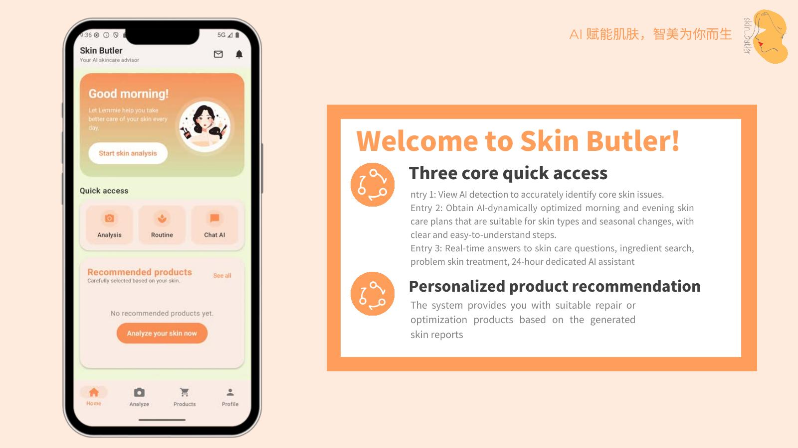

04 / CONSUMER周末见
AI PRODUCT MANAGER · 2027 CAMPUS RECRUITMENT
你好，我是谢晓璐。
我把复杂业务拆成可调用的 Tools、可控的 Workflow，
以及能被验证的产品体验。

脚本 · Playbook
执行 · 安全



SELECTED CASES / 01—04
BLUEKING LITE
参与 Monitor 监控产品和 AI 自动化巡检：从资源、指标、告警与策略的产品梳理，到 Agent 工作流、报告生成和邮件交付。重点不是“接一个模型”，而是让信息来源、调用过程和最终动作都可控。
JOBPILOT
为自己的秋招场景设计个人求职工作台：保留信息原文与来源，拆分岗位、标注置信度、解释匹配依据，最后进入投递状态管理。AI 负责增强判断，但最终提交和敏感信息始终由人确认。
JOB MANAGEMENT
围绕脚本执行、文件分发、定时任务和 Playbook 管理搭建完整信息架构，同时设计高危命令、高危路径与许可规则，把效率与风险控制放进同一条产品链路。
14:23:15 [INFO] 开始执行脚本...
14:23:22 正在检查目标主机 2/2
14:23:31 高危命令规则校验通过
14:23:48 [EXIT] 执行成功，退出码 0
周末见
面向城市青年，把天气、距离、心情和社交边界组织成一份可执行的半日提案。用户可以独自保存，也可以加入低压力小队；活动后用一句感受留下非表演性的记录。
“同样喜欢散步的人，期待的聊天强度、人数和节奏可能完全不同。”
EXPERIMENTS / SIDE QUESTS
NIPT 时点优化与异常判定；粉丝投票重建与竞赛公平性研究。
GAM · COX · PSO · COHSS
自然语言任务、Blockly 编排、视觉标定与受控执行。
查看操作手册 ↗ABOUT / XIAOLU
华南师范大学信息管理与信息系统专业，正在寻找 2027 秋招 AI 产品经理机会。我的优势不只是会使用 AI 工具，而是能在业务、技术和体验之间建立结构，并把判断落实成可以演示、验证和交付的产品。
NEXT CHAPTER / 2027